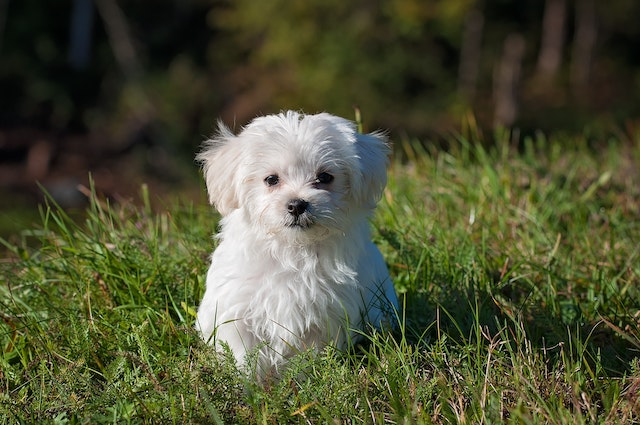
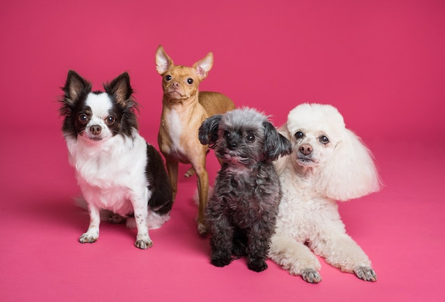

Objetivo
Las obras sociales destinadas a las mascotas callejeras son fundamentales para garantizar su bienestar y reducir la sobrepoblación. Las esterilizaciones y vacunaciones gratuitas, junto con la atención veterinaria, son algunas de las iniciativas que se llevan a cabo para mejorar su calidad de vida y evitar la propagación de enfermedades. Además, estas acciones también ayudan a sensibilizar a la sociedad sobre la importancia de cuidar y respetar a los animales, promoviendo un cambio cultural hacia el bienestar animal. Es vital continuar apoyando estas obras sociales para brindar un futuro más seguro y saludable a nuestros amigos de cuatro patas.
Servicios
